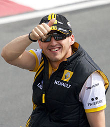

Strona jest poświęcona jedynemu Polakowi, który ścigał się w Formule 1.
Po pokazaniu swojego talentu w seriac juniorskich, Kubica został dostrzeżony przez zespół BMW Sauber i w 2006 roku został ich kierowcą rezerwowym. W treningach spisywał się znakomicie. Po wypadku Villeneuve'a (wtedy kierowcę wyścigowego BMW Sauber) Kubica poprowadził bolid po raz pierwszy w karierze w czasie kwalifikacji i wyścigu GP Węgier. Zdobył znakomite 7 miejsce, jednak został zdyskwalifikowany z powodu pustej gaśnicy. Nie przeszkodziło to jednak zespołowi zwolnić Villeneuve'a i zatrudnić w jego miejsce Roberta.
BMW Sauber był mocnym zespołem, liczącym się w walce o podium w latach 2006-2008. Wtedy to Kubica wygrał kwalifikacje do GP Bahrainu i wyścig GP Kanady. Jednak kryzys ekonomiczny i zmiana regulaminu sprawiłą, że w sezonie 2009 wyzwaniem było regularne zdobywanie punktów. Z tego powadu koncern BMW wycofał się z F1, Robert musiał rozejrzeć się za nową ekipą na sezon 2010.
Robert zdecydował się zawiązać umowę z zespołem Renault. Nie był to zespół na poziomie BMW z sezonu 2008, niektórzy nawet mówili, że mieli trzeci najgorszy bolid w stawce. Jednak Robert, wykazując się swoim geniuszem, był w stanie włączyć się tym bolidem do walki o podium. Potwierdzało to niebywały talent i wyczucie Krakowianina, do tego stopnia, że pewien zespół z czarnym koniem w logo na żółtym tle zdecydował się pozyskać go do swojego zespołu na sezon 2013.
Rajd Ronde di Andora miał być chwilową przygodą dla Roberta, oderwaniem się od padokowej rzeczywistości i rozgrzewką przed nowym sezonem 2011. Zły los jednak sobie zadrwił z Polaka i w miejscowości Testico doszło do potwornego wypadku, który całkowicie odmianił jego życie. Zamiast skupiać się na F1 i wyścigach, dla Roberta wyzwaniem było samodzielne zawiąznie butów czy zjedzenie obiadu.
Źródło: wikipedia.org
| nagłówek1 | nagłówek2 |
|---|---|
| wiersz1 | wiersz1 |
| wiersz2 | wiersz2 |